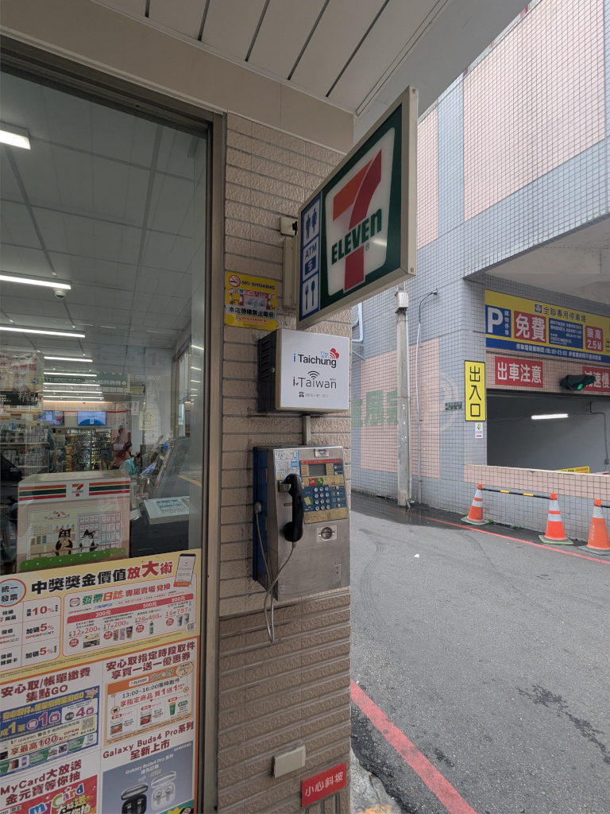
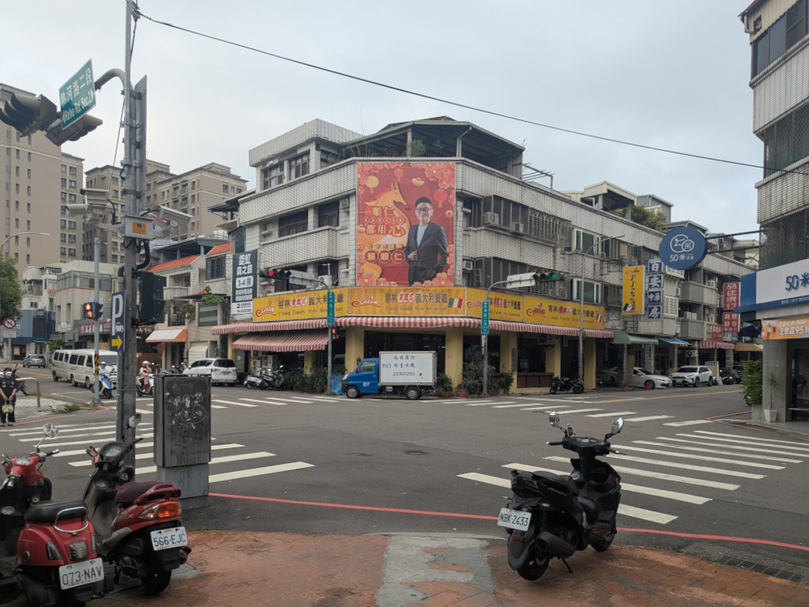
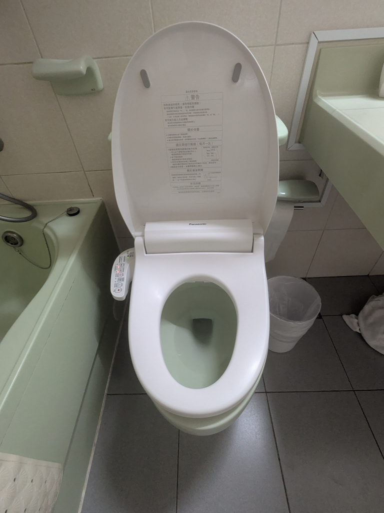
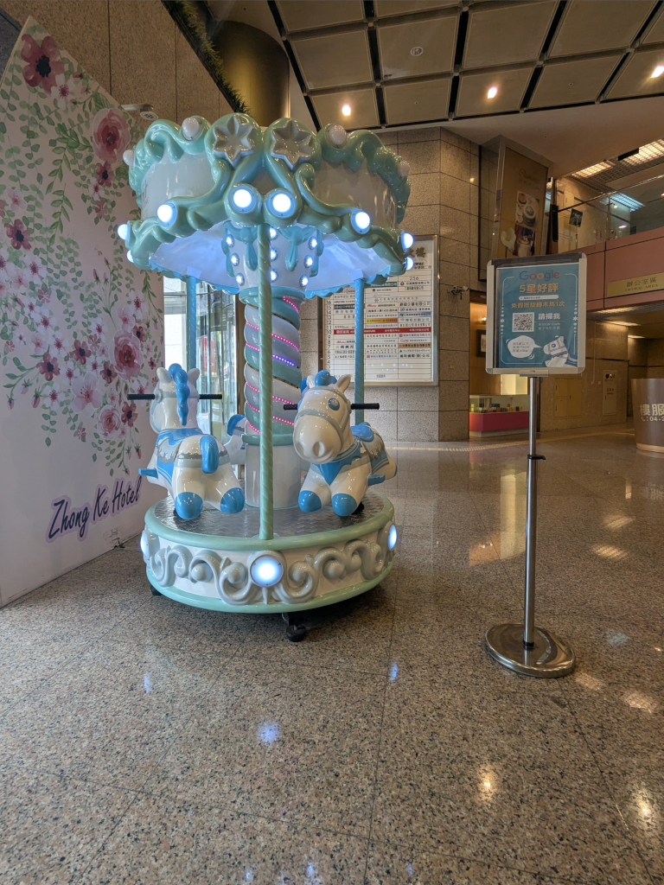
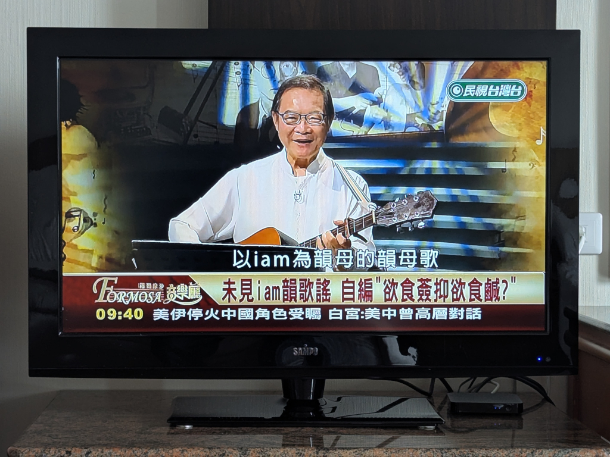
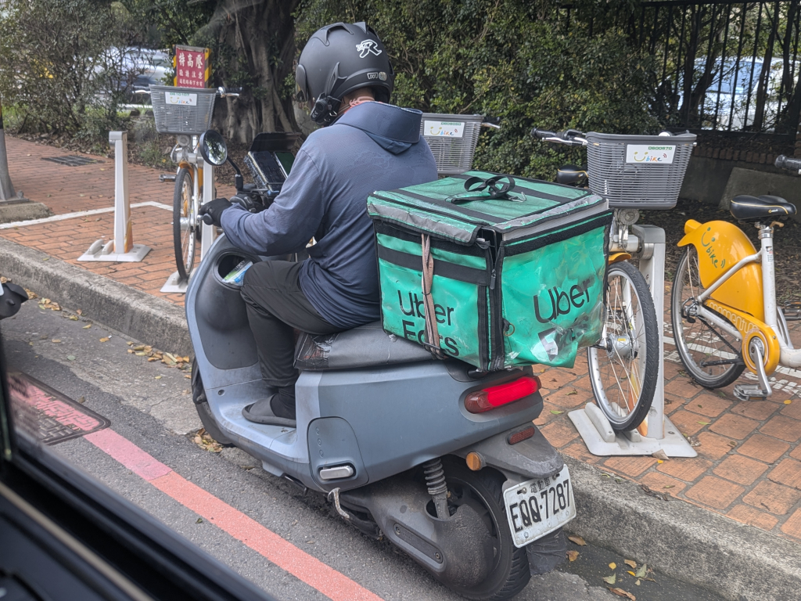
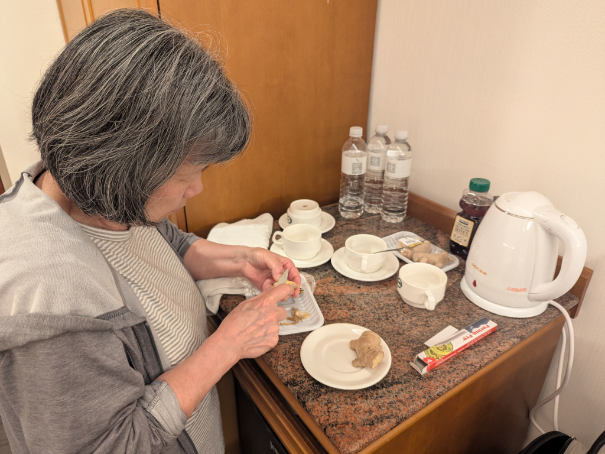

Looking to buy a 大雞排 on 一中街. | ||
Miscellaneous Pictures  Taiwan still has pay phones. From the internet, "Public phones in Taiwan are divided primarily into two types, coin and card. Coin phones accept coins in denominations of NT$1, NT$5, and NT$10." The 客林家庭式義大利餐廳 (Cream Family-Style Italian Restaurant) where we ate with Chris when we were here years ago. It was just a block away from our hotel across from the 民俗公園 at the intersection of 旅順路 and 熱河路 and could be seen from our hotel room. I noticed this 尚府商行 (Shangfu Trading Company) truck parked in front of the restaurant as we were walking to the morning market one day. I thought it interesting that 衛生冰塊 (hygienic ice cubes) were a thing in Taiwan. We had a bidet in our hotel room, but despite trying all the different buttons, we couldn't get it to work. The heated seat did work, however, which was annoying to me but fine for Mei-O. This horsie merry-go-round sat in the Zhong Ke Hotel's lobby. The sign next to it limits riders to kids under 5 years old who are less than 115 centimeters (about 3'9") tall and weigh less than 40 kilograms (about 88 lbs.) Though we saw a few kids in the hotel, mainly at breakfast, we never saw anyone riding this merry-go-round. The TV in our room, which we watched occasionally while just relaxing trying to beat our jet lag or while waiting for Meihui or Zhiwei to pick us up, had about 35 channels, but not one carrying any English movies or shows. There were quite a few news shows, some in Mandarin and some in Taiwanese, and a few Chinese movie and soap opera channels (which are mostly what we watched, despite not having any subtitles). This is Zhiwei's huge Land Rover, well suited to take a bunch of us around town. Due to Mingqi's fragile health, we were able
to park in a handicapped spot.
This is Zhiwei's huge Land Rover, well suited to take a bunch of us around town. Due to Mingqi's fragile health, we were able
to park in a handicapped spot.
 We saw a lot of these all around town during our visit, as well as a bunch of their competition. Mei-O making honey-ginger tea in our hotel room. She brought some honey from home and bought the ginger from a local supermarket. We only had it a few evenings; she had to give her leftover ginger to Meihui when we left. | ||
{kind=link}
{kind=link}
{kind=link}
{kind=link}